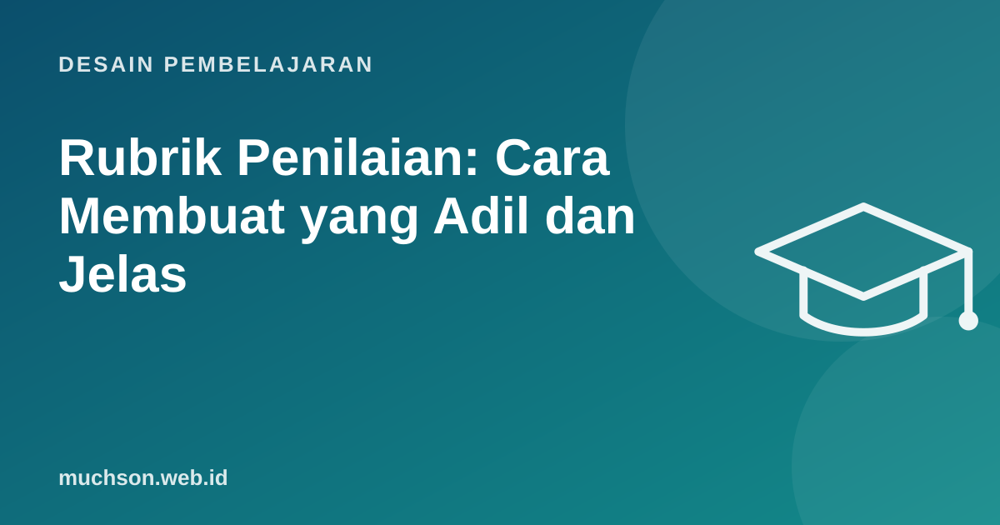

Beranda › Artikel › Desain Pembelajaran
Desain PembelajaranRubrik Penilaian: Cara Membuat yang Adil dan Jelas
Dua pengajar menilai tugas yang sama, satu memberi 85 dan yang lain 70. Peserta bingung, dan wajar saja. Rubrik yang baik membuat penilaian lebih konsisten, membuat harapan jelas sejak awal, dan bisa dipakai peserta untuk menilai karyanya sendiri sebelum dikumpulkan.

Dua jenis rubrik
Langkah membuat rubrik analitik
- Mulai dari tujuan pembelajaran. Setiap kriteria harus terkait tujuan.
- Pilih 3-5 kriteria yang paling penting. Lebih dari itu membuat penilaian lambat dan peserta bingung.
- Tentukan 3-4 level, misalnya Berkembang, Cakap, Mahir.
- Tulis deskriptor yang menggambarkan hal yang terlihat di karya, bukan kata sifat kabur.
- Uji dengan contoh karya nyata dan perbaiki deskriptor yang membingungkan.
Deskriptor: konkret, bukan kata sifat
| Kabur | Konkret |
|---|---|
| "Kode cukup rapi" | "Nama variabel menjelaskan isinya; tidak ada fungsi lebih dari 30 baris" |
| "Analisis baik" | "Setiap rekomendasi didukung minimal satu angka dari data" |
| "Presentasi menarik" | "Menjawab pertanyaan audiens dengan merujuk data; tidak membaca slide" |
Contoh rubrik: proyek aplikasi web sederhana
| Kriteria | Berkembang (1) | Cakap (2) | Mahir (3) |
|---|---|---|---|
| Fungsi | Fitur utama berjalan sebagian; ada error saat dipakai normal | Semua fitur utama berjalan pada pemakaian normal | Semua fitur berjalan, termasuk menangani input kosong dan error jaringan |
| Kualitas kode | Nama tidak jelas, banyak duplikasi | Nama jelas, sebagian logika dipisah ke fungsi | Struktur rapi, ada tes untuk logika utama |
| Desain antarmuka | Sulit dipakai, tidak berjalan di ponsel | Mudah dipakai di desktop dan ponsel | Juga memenuhi kontras dan navigasi keyboard |
| Penjelasan | Tidak bisa menjelaskan bagian kode sendiri | Menjelaskan alur utama | Menjelaskan alasan desain dan alternatif yang dipertimbangkan |
Membuat rubrik lebih adil
- Bagikan rubrik sebelum tugas dimulai, bukan setelah dinilai.
- Sertakan contoh karya untuk setiap level bila memungkinkan.
- Kalibrasi antar penilai: beberapa penilai menilai 3-5 karya yang sama, lalu diskusikan perbedaannya.
- Nilai tanpa melihat nama bila memungkinkan, untuk mengurangi bias.
- Hindari kriteria yang tumpang tindih sehingga satu kesalahan dihukum dua kali.
Rubrik sebagai alat belajar
Minta peserta menilai draf mereka sendiri dengan rubrik sebelum mengumpulkan. Ini salah satu cara termudah meningkatkan kualitas tugas dan mengurangi protes nilai.
Tanya jawab
Berapa level yang ideal?
Tiga sampai empat level biasanya cukup. Terlalu banyak level membuat perbedaan antar level sulit dijelaskan.
Bolehkah AI membantu membuat rubrik?
Boleh untuk draf awal. Tetap periksa apakah kriteria sesuai tujuan dan deskriptor konkret, lalu uji dengan karya nyata.
Apakah rubrik membuat penilaian kaku?
Tidak harus. Sediakan kolom komentar untuk hal yang tidak tercakup, dan perbarui rubrik setiap kali menemukan kasus baru.
Sumber dan bacaan lanjut
- Brookhart (2018): Appropriate Criteria, Key to Effective Rubrics, Frontiers in Education
- Jonsson dan Svingby (2007): The use of scoring rubrics, reliability, validity and educational consequences
- Menulis tujuan pembelajaran terukur ABCD (artikel terkait)